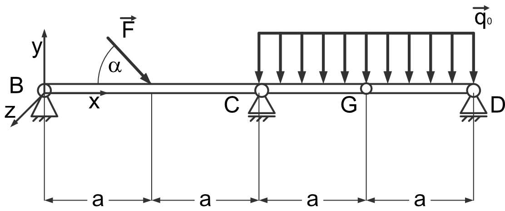
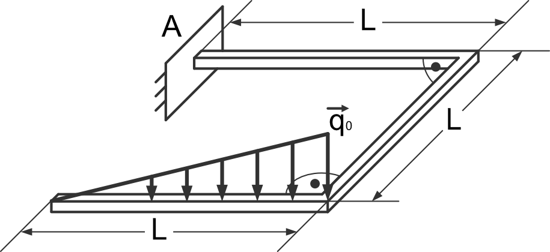

Statics: solving of systems of linear equations
Use Juypter Notebook for symbolic calculus.
E3.a - Task
{kind=link}
- given:
\(F, a, q_0, \alpha\)
- wanted:
static external (support reactions) and internal force equilibria
plot of the components internal force equilibrium
- procedure:
get function for distributed load \(q(x)\)
get components of the resulting moment/torque using \(\vec{M} = \vec{r} \times \vec{F}\)
set up system of linear equations to obtain the support reactions
solve the system of linear equations using sympy.solve
set up system of linear equations to obtain the internal force equilibrium
plot the internal force components along the beam axis (\(x\)-axis)
pseudo-code:
Note
Do this task inside a jupyter notebook!
clear variables
import sympy as sp
import ...
# define symbols
..., ..., ... = sp.symbols(...)
# Derive q(x)
def q(...):
return ...
# Set up system of equations
... = sp.Eq(..., ...)
...
# Sole system of equations
sol = sp.solve(...)
# Assign values
..., ..., ... ,... = sol.values()
# Internal forces reaction
# define symbolic functions
... = sp.Function(...)(x)
# Set up equations
... = sp.Eq(..., ...)
# Solve equations
... = sp.solve(...)
# Assign values
..., ..., ... = .... .values()
# Set up piecewise functions
... = sp.Piecewise([fun1, condition1], [fun2, (condition2) & (condition3)], ...)
# Substitute parameters: L = 1; q0 = 0.3
funName = funName.subs(...)
# Create lambda function
... = sp.lambdify(..., 'numpy')
# Plot the Results
plt.plot(...)
E3.b - Task
{kind=link}
- given:
\(L, q_0\)
- wanted:
static external (support reactions) and internal force equilibria
plot of the components internal force equilibrium
- procedure:
get function for distributed load \(q(x)\)
get components of the resulting moment/torque using \(\vec{M} = \vec{r} \times \vec{F}\)
set up system of linear equations to obtain the support reactions
solve the system of linear equations using sympy.solve
set up system of linear equations to obtain the internal force equilibrium
plot the internal force components along the beam axis (\(x\)-axis)
pseudo-code:
Note
Do this task inside a jupyter notebook!
clear variables
import sympy as sp
import ...
# define symbols
..., ..., ... = sp.symbols(...)
# Derive torque
r = sp.Matrix(..)
f = sp.Matrix(..)
m = r.cross(f)
...
# Derive q(x)
def q(...):
return ...
# Set up system of equations
... = sp.Eq(..., ...)
...
# Sole system of equations
sol = sp.solve(...)
# Assign values
..., ..., ... ,... = sol.values()
# Internal forces reaction
# define symbolic functions
... = sp.Function(...)(x)
# Set up equations
... = sp.Eq(..., ...)
# Solve equations
... = sp.solve(...)
# Assign values
..., ..., ... = .... .values()
# Set up piecewise functions
... = sp.Piecewise([fun1, condition1], [fun2, (condition2) & (condition3)], ...)
# Substitute parameters: F = 1; alpha = pi/4; a = 10; q0 = 0.3
funName = funName.subs(...)
# Create lambda function
... = sp.lambdify(..., 'numpy')
# Plot the Results
f, (ax1, ax2) = plt.subplots(1, 2)
ax1.plot(x, y1)
ax2.plot(x, y2)